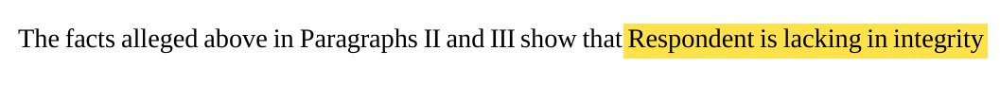

The California Insurance Commissioner, on insurance agent Jayson George Cohen
“Respondent is lacking in integrity.”

The Respondent is Jayson George Cohen, California insurance License No. 0G23649. The Commissioner charged that Cohen's answer on his license application was false and known to Respondent to be false.
Cohen is licensed today, and so is his agency, American Legacy Solutions, LLC, License No. 0M28275, of Ventura, California.
Read it in the Commissioner's own words
The question on his application
“Have you ever been convicted … of … committing a crime?”
The form defined the word for him: 'Convicted' includes … having entered a plea of guilty or nolo contendere.
Statement of Issues, ¶ III, quoting Question No. 1 of the January 23, 2007 application
The record, according to the Commissioner
“Respondent was convicted upon a plea of nolo contendere of theft, a misdemeanor.”
June 13, 2000, Santa Barbara County Superior Court Case No. 1012241.
Statement of Issues, ¶ II
His answer
“Respondent answered ‘No’ to said question. Such answer was false and known to Respondent to be false.”
Statement of Issues, ¶ III
The Commissioner's charge
“Respondent is lacking in integrity.”
Statement of Issues, ¶ V
The Commissioner's charge
“Respondent has previously engaged in a fraudulent practice or act.”
Statement of Issues, ¶ VI
The Commissioner's charge
“Respondent has knowingly or willfully made a misstatement in an application to the Insurance Commissioner.”
Statement of Issues, ¶ VIII
The Commissioner's conclusion
“It would be against the public interest to permit Respondent to transact insurance in the State of California.”
Insurance Commissioner of the State of California, Statement of Issues, File No. LBB 4044-AP (AR), ¶ IV. Read the full document (PDF)
| Licensee | Jayson George Cohen |
|---|---|
| California license | No. 0G23649 (Life; Accident & Health or Sickness) |
| Agency | American Legacy Solutions, LLC, doing business as American Legacy Insurance Solutions |
| Agency license | No. 0M28275 |
| Location | Ventura, California |
| Status | Both licenses active as of November 8, 2026, according to Department of Insurance records |
2He was licensed anyway
The Department did not deny the application. Its records show a restricted license issued on November 15, 2008. On September 22, 2015, the Commissioner found that Cohen had substantially met and complied with the restrictions and conditions placed upon said license
and ordered the restrictions removed.
Cohen has held an unrestricted license since. Department records show License No. 0G23649 active through November 30, 2028, and the agency's License No. 0M28275 active through April 30, 2028. Since April 14, 2026, the Department has listed Cohen as authorized to transact insurance for the agency.
3Chronology
Theft conviction
Convicted
Regulator's record · Statement of Issues, ¶ IIupon a plea of nolo contendere of theft, a misdemeanor,
Santa Barbara County Superior Court Case No. 1012241.Applies for a license and answers
No
The Commissioner charges that the answer
Regulator's record · Statement of Issues, ¶¶ I, III, Vwas false and known to Respondent to be false
and that heis lacking in integrity.
Charged with driving under the influence
While the application was pending, Ventura County Superior Court Case No. 2008005399 charged Cohen under Vehicle Code section 23152, subdivisions (a) and (b). The outcome is not stated in the records reviewed. Neither the Statement of Issues nor the 2015 order mentions the case.
Public record cited · Case No. 2008005399Restricted license issued
The Department issued a restricted license instead of the license applied for.
Regulator's record · License record No. 0G23649, Order ID LBB004044Sued in a collections action
CACH LLC v. Jayson G. Cohen, Ventura County Superior Court. The outcome is not stated in the records reviewed.
Public record cited · No. 200800333325CLCL$45,981 federal tax lien recorded
Recorded by the United States against
Public record citedJayson G Cohen
for tax periods ending December 31, 2010 and December 31, 2011. A federal tax lien arises when a person liable for a taxneglects or refuses to pay the same after demand.
(26 U.S.C. § 6321.)Restrictions removed
Four months after the lien, the Commissioner ordered an unrestricted license issued.
Regulator's record · Order Removing RestrictionsFunds a $215,000 asset purchase
Elite Sound Company LLC buys the business assets of Entertainment Technology, LLC. Cohen later swears:
Cohen's sworn statement · Cohen declaration, ¶ 7I personally funded the $215,000.00 payment.
Federal racketeering action filed
The First Amended Complaint names Cohen and American Legacy Solutions LLC as defendants on civil RICO and RICO conspiracy claims.
Allegation · C.D. Cal. No. 2:26-cv-03714-WLH-DFMSigns a declaration under penalty of perjury
Swears that Elite
Cohen's sworn statement · Cohen declaration, ¶ 8; Purchase Agreement, ¶ 5assumed
a $270,600 SBA loanpursuant to the Purchase Agreement.
The agreement states thatno liabilities or obligations of Seller are being assumed by Buyer.
Perjury prosecution requested
A criminal complaint and request for prosecution is submitted to the Ventura County District Attorney alleging two counts of perjury by Cohen (Pen. Code, § 118). This site does not report that any charge has been filed.
AllegationLicense complaint filed
A complaint asks the Department of Insurance to investigate and to revoke both licenses under Insurance Code sections 1668, 1668.5, and 1738.
AllegationHearing set
The defense motion that relies on Cohen's declaration is set for hearing in Department 43, Ventura County Superior Court.
Case No. 2024CUNP032821
4The sworn statement, and the contract it cites
On October 29, 2026, Cohen signed a declaration in Ventura County Superior Court Case No. 2024CUNP032821. He swore that he had personal knowledge of the facts set forth in this declaration, except as to those matters stated on information and belief.
The $270,600 SBA loan
Cohen swore that his company, Elite Sound Company LLC, took over a federal loan under a specific contract. He named the contract as his source.
What Cohen swore
What the contract says
How he signed it
Cohen swore in the same declaration that he owns ninety percent of Elite and that he personally funded
its $215,000 payment under that agreement.
The sale
of Airlink
Cohen also swore:
[The plaintiff] also owned a second company, known as Airlink, which he sold to Advantage Telecom on a date unknown to me. Chris Brassers is the owner of Advantage Telecom.
Declaration of Jayson Cohen, ¶ 9
A paralegal employed by Cohen's own lawyer swore, in the same motion, that Airlink's business report identifies [the plaintiff] in reported executive roles including chief executive officer, president, chief financial officer, director, and, secretary,
and that the Secretary of State report identifies Airlink Internet, Inc. as active and in good standing with the Franchise Tax Board, and lists [the plaintiff] as its registered agent in the current filing information.
Declaration of Rene Creamer, ¶¶ 9, 10
Cohen swore to the sale as a fact within his personal knowledge while stating that he does not know when it happened. The only source he names for anything about Airlink is others in the telecommunications business.
The declaration was filed in support of a defense motion set for hearing December 10, 2026. A request to prosecute these statements as perjury is pending before the Ventura County District Attorney. No court has ruled on that question, and this site does not report that any charge has been filed.
5The federal case
Cohen and his insurance agency are defendants in a federal action in the United States District Court for the Central District of California, No. 2:26-cv-03714-WLH-DFM. The First Amended Complaint pleads civil RICO (18 U.S.C. § 1962(c)) and RICO conspiracy (18 U.S.C. § 1962(d)) claims against Cohen and American Legacy Solutions LLC, among others.
The complaint alleges that American Legacy Solutions LLC is owned and controlled by Cohen
and that it supplied or facilitated the capital, credit, accounts, resources, structure, business support, office support, and operating capacity for the acquisition
of another company's business assets. It alleges that the price was grossly inadequate,
and that Cohen and ALS knowingly took part in and directed the Enterprise's conversion of [the plaintiff's] forced absence into a business acquisition.
The purchase price is not in dispute. Cohen swore he paid it.
What was paid, and what the complaint alleges the business was worth
Sources: Declaration of Jayson Cohen, ¶ 7; First Amended Complaint, ¶ 105.
The racketeering claims are the plaintiff's allegations. Cohen has not denied them. On September 2, 2026, the court stayed the action pending two related state-court cases, and that order is on appeal. No court has ruled on the claims.
6Standing of each item
| Item | Standing | Source |
|---|---|---|
| Misdemeanor theft conviction on a nolo contendere plea, June 13, 2000 | Regulator's record Stated by the Insurance Commissioner | Statement of Issues, ¶ II |
False Noanswer on the 2007 application; lacking in integrity | Regulator's record Charged in writing by the Insurance Commissioner. A restricted license followed; restrictions were removed in 2015 | Statement of Issues, ¶¶ III, V; Order Removing Restrictions |
| Driving-under-the-influence charges, February 9, 2008 | Public record cited Charged. Outcome not stated in the records reviewed | Ventura County Superior Court Case No. 2008005399 |
| Collections lawsuit by CACH LLC, late 2008 | Public record cited Filed. Outcome not stated in the records reviewed | No. 200800333325CLCL |
| $45,981 federal tax lien, May 12, 2015 | Public record cited Recorded by the United States | Federal tax lien |
Swore Elite assumedthe SBA loan pursuant to the Purchase Agreement | Cohen's sworn statement The agreement says no liabilities or obligations of Seller are being assumed by Buyer | Cohen declaration, ¶ 8; Purchase Agreement, ¶ 5 |
Personally fundedthe $215,000 asset purchase | Cohen's sworn statement | Cohen declaration, ¶ 7 |
| Perjury | Allegation Prosecution requested November 5, 2026. No charge reported, no finding by any court | Request for Prosecution, Ventura County District Attorney |
| Civil RICO and RICO conspiracy, against Cohen and American Legacy Solutions LLC | Allegation Not denied by Cohen. Action stayed September 2, 2026 pending related state cases; stay on appeal. No ruling on the claims | C.D. Cal. No. 2:26-cv-03714-WLH-DFM |
7Check a license yourself
- Search License No. 0G23649 or No. 0M28275 on the California Department of Insurance license lookup. It shows current status and enforcement history.
- Before buying from any agent, ask whether a regulator has ever charged them with a false statement on a license application, and get the answer in writing.
- If you have had dealings with this licensee or agency, the Department takes consumer complaints at 800-927-4357 and through its consumer page.
Source documents
- Statement of Issues, In the Matter of the Application of Jayson George Cohen, Cal. Dept. of Insurance File No. LBB 4044-AP (AR)
- Order Removing Restrictions, File No. LBB 4044-BP (AR), September 22, 2015
- Declaration of Jayson Cohen, executed October 29, 2026, page 3, Ventura County Superior Court No. 2024CUNP032821
- Business Assets Sale Agreement dated November 26, 2022, page 2
- Declaration of Rene Creamer, executed November 3, 2026, paragraphs 9 and 10, same case
- First Amended Complaint, C.D. Cal. No. 2:26-cv-03714-WLH-DFM, paragraphs 28, 105, 170 and the Third and Fourth Causes of Action
- Ventura County Superior Court Case No. 2008005399; CACH LLC v. Jayson G. Cohen, No. 200800333325CLCL; federal tax lien recorded May 12, 2015; Department of Insurance license records for Nos. 0G23649 and 0M28275